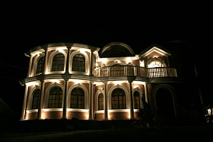
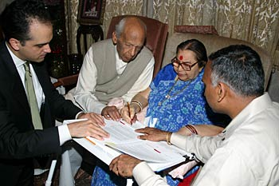
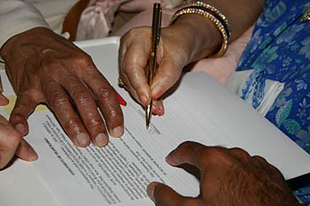
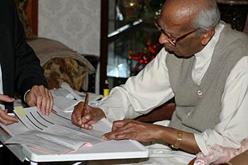
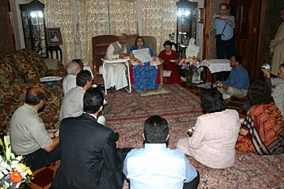
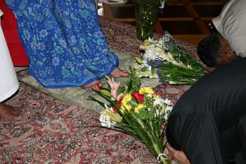
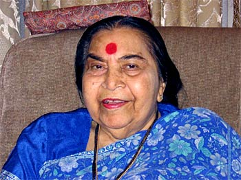

A Major Event In The History Of Sahaja Yoga
New Jersey , USA Friday, 16 September 2005
In a short, simple ceremony on Friday, September 16th, with a small group of World Council members and U.S. leaders as witnesses, Shri Mataji signed several documents that legally transfer ownership of all Her work - Her entire life's teachings to the trusteeship of the Shri Mataji Nirmala Devi Sahaja Yoga World Foundation.

This is a momentous event in the history of Sahaja Yoga, for it places the responsibility for the propagation and dissemination of Shri Mataji's teachings fully with Sahaja Yogis.

Paul Ellis, speaking on behalf of the World Council and the Sahaja Yoga world collective, affirmed the historic significance of this event and expressed gratitude for this gift whose value is beyond measure. When we pointed out the large number of Her talks that have been catalogued so far, many thousands in all, Shri Mataji commented in English, “So many!” (As the written lists of these talks, which were part of the legal documents, numbered more than 100 pages, Shri Mataji expressed visible relief when we explained to Her that it was not necessary that She sign each and every one of them!).

A small table was placed before Shri Mataji, and the documents were placed before Her. Due to the number of documents that required Her signature, Sir C.P. suggested that She might write Her initials or Her name. She chose to sign “Nirmala” in Devanagari script. “It is my name,” She said.
Even in Her choice of this script that dates to ancient times, there seemed to be many layers of untold significance. For although many of us present had watched Her sign documents on many previous occasions, none of us could remember having seen Her do so in Devanagari (Devanagri is the script used in Sanskrit as well as modern-day Hindi).
Upon the completion of the signing, we pledged to Shri Mataji that, as a world collective, we would take up this important responsibility of preserving and maintaining Her talks in perpetuity and making them readily available in every corner of the world.

Additionally, Sir C.P. signed the papers to transferred title of their house in New Jersey to the Foundation.
Following the signing, two cakes were offered and Shri Mataji made the ceremonial first cut. Although She insisted that all of the yogis in attendance be served in addition to Herself and Sir C.P., we all felt shy to be eating in Her presence. Only at Her urging did we finally partake of this wonderful prasad.

Shri Mataji very much enjoyed the entire event. Both during the signing and afterwards She made occasional small comments about the goings on and kept looking around, enjoying the presence of all of Her children.
While Shri Mataji and Sir C.P. enjoyed their cake, we reflected on the great significance of this event.
We observed that, while no other incarnation has left a record of his or her actual words, we have the great blessing to have thousands of tapes of our Mother in which She has memorialized the sacred and subtle knowledge of Sahaja Yoga.
We also acknowledged to Shri Mataji and Sir C.P. that, given that these 35 years worth of talks represent the entire body of Her life's teachings, for Her to give them to the Foundation in this manner signifies the generosity not only of our Holy Mother, but of Sir C.P. and of their entire family. Through this act, the entire family has expressed, in a beautiful and gracious manner, their commitment to the great vision that Shri Mataji has offered to the world.

As Sir C.P. said to us at the closing of the evening, “The whole family is united and forcefully behind all this. No two opinions about it. Anything more we can do, we will regard it as our first duty.”

We now embark on a huge project. A formal committee has been established under the supervision of the Sahaja Yoga World Council that will strengthen national and international resources to make the knowledge of Her Holiness Shri Mataji more widely and easily accessible.
!Jai Shri Mataji!
Manoj Kumar, Paul Ellis and Alan Wherry
On behalf of the World Council for the Advancement of Sahaja Yoga